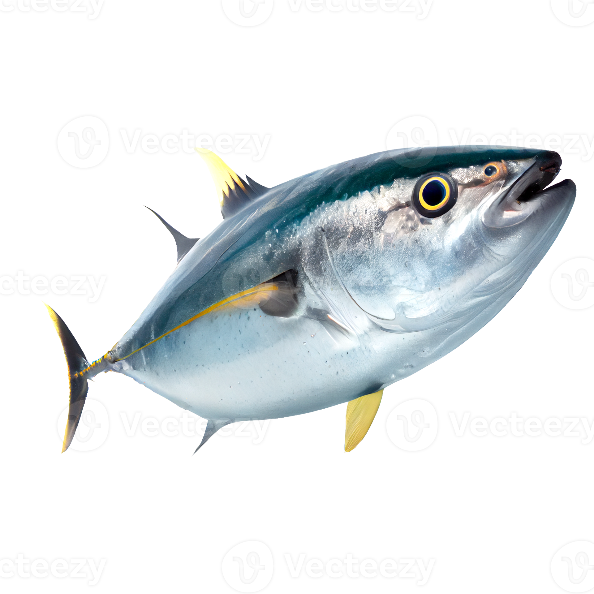

Back to the Aquarium!
tuna
salmon
squid
Tuna
Tuna (pl.: tunas or tuna) are saltwater fish belonging to the tribe Thunnini,
a subgrouping of the Scombridae (mackerel) family. The Thunnini comprise 15
species across five genera,[2] the sizes of which vary from the bullet tuna
(max length: 50 cm or 1.6 ft, weight: 1.8 kg or 4 lb) to the Atlantic bluefin
tuna (max length: 4.6 m or 15 ft, weight: 684 kg or 1,508 lb),
which averages 2 m (6.6 ft) and is believed to live up to 50 years.
